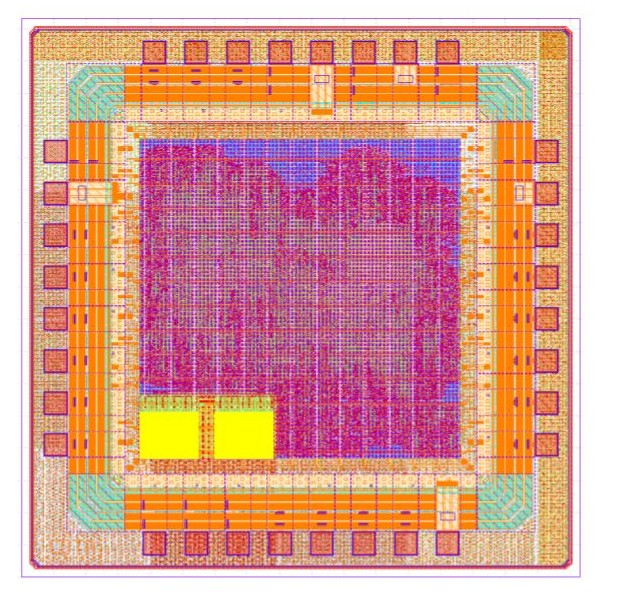

QoSoC: Low-Power RISC-V SoC
A taped-out system-on-chip for soil quality monitoring, built on an open 130nm PDK.
- STACK
- RISC-V · Verilog · IHP SG13G2 130nm
- STATUS
- Taped out
- ROLE
- Digital design, CDTA collaboration

// The brief
Soil quality monitoring for agriculture needs sensor nodes that can run for long stretches on very little power, which pushes a lot of the design burden down into silicon rather than firmware. The brief was to design a RISC-V based SoC purpose-built for that workload, rather than adapting a general-purpose chip. The result is MCU2972, an open-source 32-bit RISC-V MCU (RV32EC) co-developed with the CDTA team and released under Apache 2.0.
// What I built
My contributions were digital design, FPGA-level functional verification in SystemVerilog, and RTL/Wishbone debug. It was my first full IC design, carried from architecture through to tapeout on IHP's open SG13G2 process.
| Core | PicoRV32, RV32EC |
|---|---|
| Memory | QSPI XIP (up to 8 MB external flash), 2 KB SRAM |
| Peripherals | UART, I²C, GPIO |
| Timing | Timer with PWM/capture, dual RTC, watchdog |
| Power | 5-state PMU with per-peripheral clock gating |
| Physical checks | Clean LVS / DRC / antenna, no setup/hold violations |
| Size | ~38k standard cells |
| Power draw | ~5.2 mW @ 16 MHz |
| Process | IHP SG13G2 130nm |
| License | Apache 2.0 |
// Result
The design was signed off and sent to fabrication: a full tapeout rather than a simulation-only exercise, with clean LVS, DRC and antenna checks and no setup/hold violations.